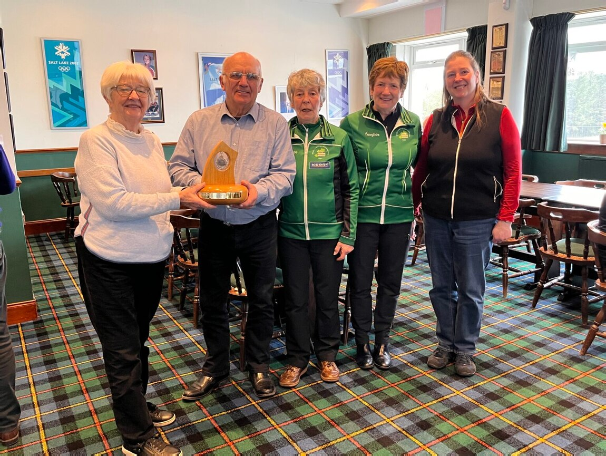

The ICA held on to the Ardrossan–Belfast Trophy with a 9–7 win.

Tommy Campbell, Christine Furey, Alison Barr and Clare McCormick faced an Ardrossan Castle Curling Club side skipped by Gordon Christie. The competition between Irish curlers and Ardrossan dates to 1861.
The ICA led 5–1 after three ends before Ardrossan came back to lead 7–6. With the ICA ahead 8–7 in the last end, Campbell played a double raise onto the button. Ardrossan’s final runback missed and the ICA won 9–7.
ICA founding member Carolyn Hibberd presented the trophy.